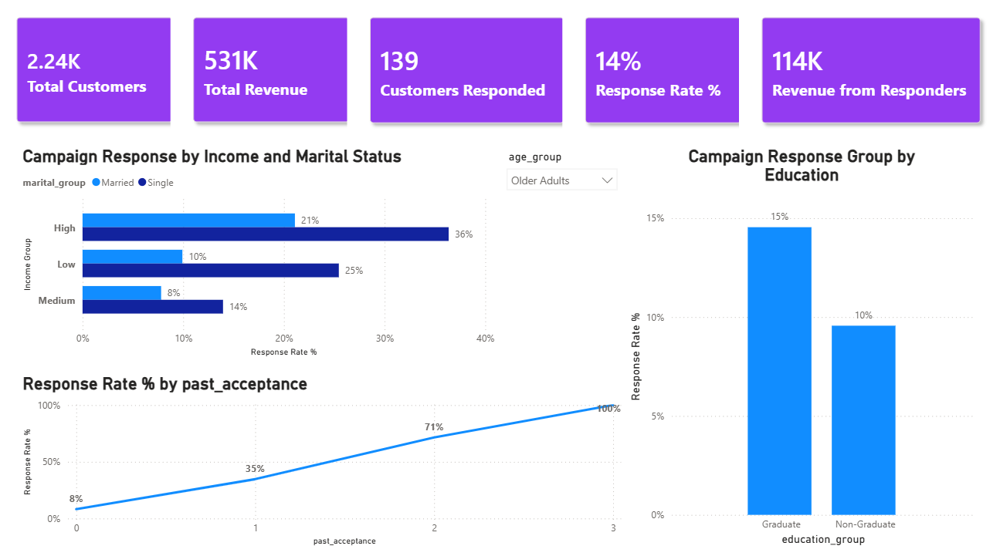

Marketing Analytics Dashboard
SQL | Power BI | Customer Segmentation | RFM Analysis

Business Problem
The company lacked visibility into customer behavior, campaign performance, and revenue contribution
across different customer segments. Marketing efforts were not effectively targeted, leading to
inefficient spending and low campaign response rates.
Key Performance Indicators (KPIs)
- Total Customers
- Total Revenue
- Average Revenue per Customer
- Campaign Response Rate
- High-Value Customers (Champions)
- Revenue at Risk
Key Insights
- High-value customers contribute a large portion of total revenue but are not always responsive to campaigns.
- Middle-aged customers show the highest engagement rates, making them the most effective target group.
- Senior customers generate strong revenue but have lower campaign interaction.
- A significant portion of revenue is at risk due to low engagement from key customers.
Tools Used
SQL, Power BI, Excel, RFM Analysis